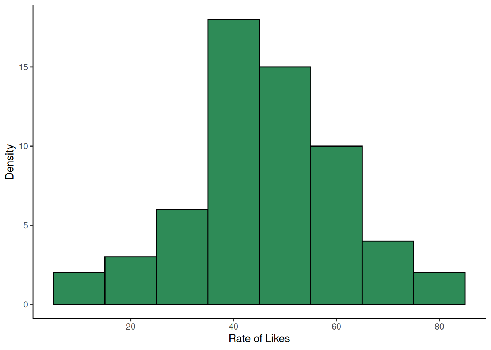

Chapter 5 Testing for differences between groups
This week we will be learning how to conduct an independent samples t-test. This is a statistical test that allows us to compare the means of two independent groups on a continuous outcome variable. According to the 90/10 theorem, we will spend 90% of our time wrangling and visualising our data, and 10% of our time actually conducting the t-test.
5.1 Checking installation and loading packages
As usual we first always check and load in our required packages.
# Check if packages are installed, if not install.
if(!require(here)) install.packages('here') #checks if a package is installed and installs it if required.
if(!require(tidyverse)) install.packages('tidyverse')
library(here) #loads in the specified package
library(tidyverse)In Chapter 4, we performed an analysis to learn how mood impacts active social media behaviour. However, that is not the only factor that influences social media use. For example, Sapienza et al (2023) found that people in rural areas are more likely to use their smartphone for social media and gaming, whereas urban dwellers are more likely to use their phone for navigation and business.
However, we do not know if people living in urban and rural areas engage with social media differently, regardless of how long they spend on their chosen platforms. Today we will address this question using the urban, good_mood_likes, bad_mood_likes, and followers variables. Remember, these variables stand for the following:
urban– urban (1) or rural (2) area (based on postcode density)good_mood_likes– average number of likes made over 10 min during a good mood (from platform + diary)bad_mood_likes– as above, but during bad moodfollowers– average number of followers across platforms
5.1.1 Activity - Formulate your research question
What do you think? Will urban and rural dwellers engage differently with social media? Will there be a difference in the number of likes made by people living in urban vs rural areas? Or in the number of followers people have in urban vs rural areas?
Question: What are the null hypotheses for your research questions (you should have one for ‘likes’ and one for ‘followers’? Now, what predictions would you make about differences?
Extra info: We are going to average over the effect of mood, so we do not need to include mood in our predictions about likes.
5.1.2 Activity - Load in data and check it
Today we will be averaging across mood to get the number of likes for urban and rural dwellers. This means we first need to create a new variable called likes which is the average of the likes in a good and bad mood.
We first load in ourPSYC2001_social-media-data-cleaned.csv dataset. Copy and paste this code
into your script and run it to load in the data.
social_media <- read.csv(file = here("Data","PSYC2001_social-media-data-cleaned.csv")) #reads in CSV filesLets double check its the data we think it is by using the head() function. See that we’ve added in an argument to say we want to see the first 10 lines of the data. Amend your code in your script to look at the number of rows your very own eyes want to see.
head(social_media, 10) # you can even say how many lines you want to see! Try changing the number, and see what happens.## X id age time_on_social urban good_mood_likes bad_mood_likes
## 1 1 S1 15.2 3.06 1 22.8 46.5
## 2 2 S2 16.0 2.18 1 46.0 48.3
## 3 3 S3 16.8 1.92 1 50.8 46.1
## 4 4 S4 15.6 2.61 1 29.9 29.2
## 5 5 S5 17.1 3.24 1 37.1 52.4
## 6 6 S6 15.7 2.44 1 26.9 20.2
## 7 7 S7 19.7 1.46 1 14.8 35.1
## 8 8 S8 18.6 1.52 1 26.0 35.8
## 9 9 S9 19.6 1.92 1 6.5 12.2
## 10 10 S10 15.5 2.10 1 45.7 32.8
## followers polit_informed polit_campaign polit_activism
## 1 173.3 2.3 3.2 3.6
## 2 144.3 1.6 2.2 2.6
## 3 76.5 1.9 2.7 3.0
## 4 171.7 1.6 2.3 2.6
## 5 109.5 2.0 2.9 3.3
## 6 157.5 2.4 3.4 3.9
## 7 166.9 1.7 2.4 2.7
## 8 109.6 1.6 2.2 2.6
## 9 253.4 1.5 2.1 2.4
## 10 77.2 2.2 3.1 3.55.2 Wrangling our data
There are a couple of things we need to do to get our data into shape. The first is to create our new variable likes which is the average of good_mood_likes and bad_mood_likes. The second is to define the urban factor correctly. More on that to come!
5.2.1 Activity - Creating a new likes variable
We need to create a new variable called likes which is the average of good_mood_likes and bad_mood_likes. To do this, we are going to use the mutate() function from the tidyverse package. You can think of using mutate() as a way to create a new column in your dataframe, using information from other columns.
To use mutate() we need to use the pipe operator %>% which we also used in Section 4.5.1. The pipe operator takes the output of one function and uses it as the input for the next function. This is very useful when we want to do multiple things to a dataframe in a single line of code.
We are going to use the pipe operator to take the social_media dataframe and then use mutate() to create our new variable likes. Because we want the average likes, we will add good_mood_likes and bad_mood_likes together and then divide by 2.
Run the following line of code in your script to see the output.
social_media_likes <- social_media %>%
mutate(likes =(bad_mood_likes + good_mood_likes)/2 ) # creates a new variable called likes which is the average of bad_mood_likes and good_mood_likes## X id age time_on_social urban good_mood_likes bad_mood_likes
## 1 1 S1 15.2 3.06 1 22.8 46.5
## 2 2 S2 16.0 2.18 1 46.0 48.3
## 3 3 S3 16.8 1.92 1 50.8 46.1
## 4 4 S4 15.6 2.61 1 29.9 29.2
## 5 5 S5 17.1 3.24 1 37.1 52.4
## 6 6 S6 15.7 2.44 1 26.9 20.2
## 7 7 S7 19.7 1.46 1 14.8 35.1
## 8 8 S8 18.6 1.52 1 26.0 35.8
## 9 9 S9 19.6 1.92 1 6.5 12.2
## 10 10 S10 15.5 2.10 1 45.7 32.8
## followers polit_informed polit_campaign polit_activism likes
## 1 173.3 2.3 3.2 3.6 34.65
## 2 144.3 1.6 2.2 2.6 47.15
## 3 76.5 1.9 2.7 3.0 48.45
## 4 171.7 1.6 2.3 2.6 29.55
## 5 109.5 2.0 2.9 3.3 44.75
## 6 157.5 2.4 3.4 3.9 23.55
## 7 166.9 1.7 2.4 2.7 24.95
## 8 109.6 1.6 2.2 2.6 30.90
## 9 253.4 1.5 2.1 2.4 9.35
## 10 77.2 2.2 3.1 3.5 39.25You can see that mutate() has created an extra column called likes. You can manually check that the first couple of values are correct, by adding the good_mood_likes and bad_mood_likes values together and dividing by 2.
Tip: Manually checking that a function has done what you think it should is a good habit to get into. It will help you catch mistakes early on.
Looking at the dataframe above, we can see that the first value for good_mood_likes is 22.8 and the first value for bad_mood_likes is 46.5. Lets add them together and divide by 2, to check the answer is the same as the first value for likes, which is 34.65.
Type the below into your console and check you get the same answer:
## [1] 34.65Woohoo!
Now, this dataframe has all we need for our analysis, and a lot more! Let’s make things simpler for ourselves by only keeping the variables we need. We can do this by once again using the pipe operator, along with the select() function.
Update the code in your script so that it looks like this:
social_media_likes <- social_media %>%
mutate(likes =(bad_mood_likes + good_mood_likes)/2 ) %>% # creates a new variable called likes which is the average of bad_mood_likes and good_mood_likes
select(id, urban, likes, followers) #selects only the specified columns from the dataframeCheck that you got what you want by using the head() function again.
5.2.2 Activity - Defining factors
Now that we have this dataframe object it is important to check that R can understand the data properly. Lets use the str() function that we learned about in Section 3.6.1 to examine what R thinks about each column. Complete the code in your script and run it, to make sure you get the same results.
## 'data.frame': 60 obs. of 4 variables:
## $ id : chr "S1" "S2" "S3" "S4" ...
## $ urban : int 1 1 1 1 1 1 1 1 1 1 ...
## $ likes : num 34.6 47.1 48.5 29.5 44.8 ...
## $ followers: num 173.3 144.3 76.5 171.7 109.5 ...What have we learned? We can see that R thinks that urban contains integers (int), i.e. R thinks that urban is a column of real numbers containing 1s and 2s. But urban is not a numeric variable, it is actually a factor (categorical variable).
If you remember from the README.txt file (which you read already, right? :)), 1 stands for urban and 2 stands for rural. We need to tell R this, so that it can understand the data properly.
To do this, we can use the as_factor() function, which converts a variable to a factor. We also need to tell R that 1 means urban and 2 means rural. We can do this using the factor() function within mutate(). The mutate() function is coming in handy today!
social_media_likes <- social_media_likes %>%
mutate(urban = factor(urban, levels=c(1,2), labels=c('urban', 'rural'))) #changes the urban variable to a factor with levels urban and ruralNow we want to test that this code did what we wanted it to do. Use the str() function again to check that urban is now a factor.
## 'data.frame': 60 obs. of 4 variables:
## $ id : chr "S1" "S2" "S3" "S4" ...
## $ urban : Factor w/ 2 levels "urban","rural": 1 1 1 1 1 1 1 1 1 1 ...
## $ likes : num 34.6 47.1 48.5 29.5 44.8 ...
## $ followers: num 173.3 144.3 76.5 171.7 109.5 ...Excellent! We can see that R now thinks that urban is a factor with 2 levels: urban and rural. Our data is now in a format that we should be able to easily visualise it and conduct our statistical tests. 90% done :)

Figure 5.1: What it feels like teaching this section
5.3 Visualising our data
If you remember from Section 4.5.3, we learned that we need to visualise our data to check if the distributions look roughly normal, and to check there are no obvious outliers or strange values that will impact our analysis.
Today, we are going to examine our variables using histograms. Just as we did in Section 3.11.2. We have copied the code from Section 3.11.2 below, and have added a few options into the geom_histogram() function so that you can get a nice looking histogram. This code is also in your script.
5.3.1 Adapting our previous code to make new histograms
Your challenge, should you choose to accept it*, is to change the code in your script so that you instead make a histogram for likes using the social_media_likes dataframe. Also remember to adjust the axis labels!
*You have to accept it. Determinism beats free will.
## health warning. This is old code that needs to be adapted for current purposes!
social_media_NA %>%
ggplot(aes(x = )) + #ggplot uses aesthetic (aes()) to map axes.
geom_histogram(binwidth=10, col="black", fill="seagreen") + #creates a histogram with blue fill, black borders, and a binwidth of 10
labs(x = "Time on social media", y = "Density") + #short for "labels", use to label the axes.
theme_classic() #changes the theme of the plot to a classic theme. makes it prettier!You should get a histogram that looks something like this:

What would you say about this data, now you have looked at the histogram? Does it look normally distributed? Are there any outliers?
Now, can you make a density plot for followers? Copy and paste the code you used to make the histogram for likes and make the teeny changes required. Go on, you are a coder, and you are strong.

Question: Does followers look normally distributed to you? Why might the data be shaped how it is?
Indeed, the followers variable looks different to the likes variable. This is not too surprising. A fewer number of people in the sample have a huge number of followers, and the rest have a more modest number. Just like in real life. Random sampling works! Ahhh, science.
Because the followers variable is not normally distributed, we will need to be a bit cautious when interpreting the results of our t-test later on. But we can still proceed, as the t-test is quite robust to violations of normality. You would just make sure to mention this in your write-up, so that your readers also know.
5.4 Next step: descriptive statistics
Now that we know what shape our data is in, and when we should exercise caution, we can move on to generating some descriptive statistics of our key variables.
In Section 4.6.1 we learned how to summarise our data to get descriptive statistics. Now you’ll get to see some more of the joy of coding - once you have written a bit of code that does something you need, its very easy to adapt it to do something else you need.
Here is the code we wrote last week to get descriptive statistics of the rate of likes, grouped by mood:
social_media_likes %>%
group_by(mood) %>% #split the data by mood
summarise(mean = mean(likes),
sd = sd(likes)) #calculate the mean number of likesWe want to adapt this code to get the mean and standard deviation for likes and followers, this time grouping by urban. You will find the below code in your script. Complete it to get the descriptive statistics you need.
social_media_descriptives <- social_media_likes %>% # save to new object called social_media_descriptives
group_by() %>% # group the data by urban
summarise(
mean_followers = mean(followers), # calculate the mean number of followers for urban and rural groups separately
mean_likes = mean(likes),
sd_followers = sd(),
sd_likes = sd()
)
social_media_descriptivesCheck that your output for social_media_descriptives looks like this:
## # A tibble: 2 × 5
## urban mean_followers mean_likes sd_followers sd_likes
## <fct> <dbl> <dbl> <dbl> <dbl>
## 1 urban 144. 40.8 62.0 14.5
## 2 rural 106. 52.1 40.9 12.7Look at the mean values you have generated for urban and rural dwellers. Do they make sense to you? Do they fit with your predictions from earlier?
5.5 Independent samples t-test
Now we are down to the very last few percents of our 10% of analysis efforts. Let’s perform an independent samples t-test to see if there are statistically significant differences between urban and rural dwellers in terms of their likes and followers.
5.5.1 Activity - Performing an independent samples t-test
In Section 4.8.1 we learned how to conduct a paired samples t-test. To do this, we had to deal with niggly base R demands and use the wideform data instead of our carefully wrangled longform data. Fortunately, the t.test() function is a bit more forgiving when it comes to independent samples t-tests, and we can use our longform data combined with a nifty thing that base R knows about, which is formulas. Huzzah.
This is how we use the formula method in t.test(). The syntax is t.test(outcome ~ group, data = dataframe). So, for our data, we want to test if likes differ by urban, using the social_media_likes dataframe.
Note that you don’t need to set the paired argument to FALSE, as the t.test() function assumes this whenever you use the formula method. So never use the formula method for a paired samples t-test. That would be a disaster.
Run the below line of code in your script, to check you get the same output.
t.test(likes~urban, data=social_media_likes) # conducts an independent samples t-test to see if likes differ by urban/rural status##
## Welch Two Sample t-test
##
## data: likes by urban
## t = -3.2184, df = 56.996, p-value = 0.002129
## alternative hypothesis: true difference in means between group urban and group rural is not equal to 0
## 95 percent confidence interval:
## -18.338983 -4.271017
## sample estimates:
## mean in group urban mean in group rural
## 40.78833 52.09333Question: Discuss the output of this independent t-test, what does it tell you about the differences between urban and rural dwellers and how they actively use social media? Is it what you expected when you formulated your hypothesis?
Now complete the following line of code in your own script, to test if followers differ by urban.
t.test(???, data=social_media_likes) # conducts an independent samples t-test to see if followers differ by urban/rural statusCheck your output with what you see below to make sure you got it right. Also, make sure to interpret what the output is telling you!
##
## Welch Two Sample t-test
##
## data: followers by urban
## t = 2.8182, df = 50.234, p-value = 0.00689
## alternative hypothesis: true difference in means between group urban and group rural is not equal to 0
## 95 percent confidence interval:
## 10.98893 65.49107
## sample estimates:
## mean in group urban mean in group rural
## 143.8767 105.6367
Figure 5.2: Every PSYC2001 midterm
5.6 Writing up results and conclusions
This is how we would write up the results of an independent samples t-test.
Results: An independent samples t-test indicated that the number of likes was greater for rural (M = 52.1 , SD = 12.7) compared to urban dwellers (M = 40.8 , SD = 14.5) and this difference was statistically significant (t(58) = 3.22, p = 0.002). Conversely, the number of followers was greater for urban (Mean = 143.9, SD = 62.0) than for urban dwellers (M = 105.6, SD = 40.9) which was statistically significant (t(58) = 2.82, p = 0.007).
5.7 Bonus - Visualising group differences
If you have made it this far with time to spare, then kudos. Here are some extra skills that will be very helpful when you need to present results relating to group differences. Which you might need to do in a certain upcoming assignment.
Earlier, we looked at the overall histograms for likes and followers. But when presenting our findings in a results section, what the reader really wants to see is how the groups differ from each other. One effective way to do this is to make a grouped boxplot. See here for more details on boxplots.
Let’s make a boxplot together, showing the likes data split by urban and rural groups. We are going to use a couple of new functions here (geom_boxplot(), scale_fill_manual()), which we explain in the comments below.
social_media_likes %>%
ggplot(aes(y = likes, group=urban, fill = urban, x = urban)) + # here we are telling ggplot that we will be putting likes
# on the y axis, that we will fill in our boxplots with colour using the urban factor, and that urban will go on the x-axis
geom_boxplot() + # this function creates a boxplot
labs(x = "Living Area", y = "Average Rate of Likes") + # here we use labs() to label our axes.
scale_fill_manual(values = c(rural = "plum", urban = "cyan2")) + #manually define the filled in colours of specific parts of a graph - see here for more R colours: https://r-graph-gallery.com/42-colors-names.html
theme_classic() 
Now we return to another critical part of coding. Copying and pasting what you have, and changing just a few bits.
Now, can you change the code above to make a boxplot for followers instead of likes? You will need to change what you give for the y argument in aes(), and the y-axis label. You can also change the colours if you want to. Copy and paste the original code in your script and make your changes. You should get something that looks like this:
Last, we often want to save our figures as image files, so that we can include them in reports or presentations. This is very easy to do using the ggsave() function.
First, you should save the plot you want to save to an object. You can do this by amending your boxplot code so that the output saves to an object, such as you see below.
likes_bp <- social_media_likes %>%
ggplot(aes(y = likes, group=urban, fill = urban, x = urban)) +
geom_boxplot() + # this function creates a boxplot
labs(x = "Living Area", y = "Average Rate of Likes") + # here we use labs() to label our axes.
scale_fill_manual(values = c(rural = "plum", urban = "cyan2")) +
theme_classic() Amend your code now to save your followers boxplot to an object called followers_bp. Run the code and check the object appears in your Environment pane.
Then, you can use the ggsave() function to save the plot to a file. The syntax is ggsave("filename.png", plot = plot_name). You can change the file extension to save in different formats (e.g., .jpg, .pdf). We want to be extra smart and save the file to our Output folder, so we will use the here() function to specify the path.
Copy and paste this code to your script, and change it to save your followers_bp plot instead of the likes_bp plot.